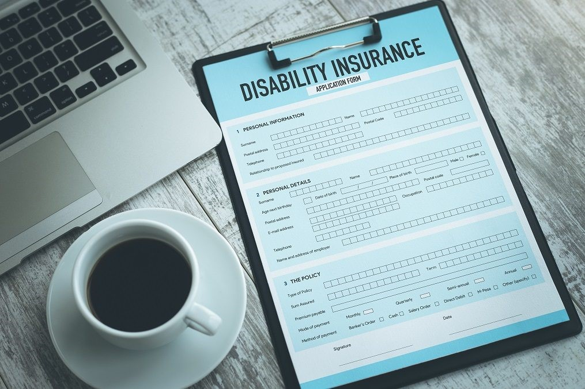

Disability Insurance
What is Disability Insurance?
Disability insurance is a type of insurance protecting workers when they lose employability and earned income due to becoming disabled. In the case of disability, the worker will be compensated by disability insurance.

Summary
- Disability insurance protects workers against the disability that leads to the loss of their job or
income.
- There are two types of disability insurance – short-term and long-term.
- Disability insurance is usually funded by the government, employers, and employees; private
disability insurance is also an option.
Types of Disability Insurance
There are two types of disability insurance, short-term and long-term disability insurance.
1. Short-term disability insurance
Short-term disability policies compensate workers when they are not able to perform their job
temporarily. Such policies may provide payments for up to two years. The short-term disability policy is
usually provided if the worker becomes temporarily sick or injured.
2. Long-term disability insurance
Long-term disability policies compensate workers when they are not able to perform their job for a longer
period or on a permanent basis. Such policies may pay the benefit for years or until the disability
ends.
Compensation of Disability Insurance
The compensation of disability insurance is calculated based on the worker’s salary and the severity of
the disability. It usually pays benefits in proportion to the worker’s salary. The compensation period
depends on the seriousness of the disability and existing legislation.
Disability Insurance Providers
Disability insurance is often seen as an unwanted risk that needs to be captured by the social benefits
system. Hence, disability insurance is obligatorily included in the working contract in many countries.
1. Government
The government funds disability insurance against bad risk as part of social security. The funding is
usually derived from taxes. Additionally, the government makes disability insurance mandatorily included
in working contracts.
2. Employer
The employer is also a disability insurance contributor. It is not only seen as a work benefit apart from
salary but is also mandatory. Depending on the industry and profession, the employer is subject to
contribute differently to the disability insurance funding.
3. Employee
In many countries, the employee is subject to contribute their social security from their own wages, and
part of this contribution is added to the disability insurance fund.
4. Private companies
Many insurance companies sell disability insurance to customers. Individuals can opt for private
disability insurance to meet their needs. For example, a worker in a hazardous profession may choose to
include additional disability insurance from a private company.